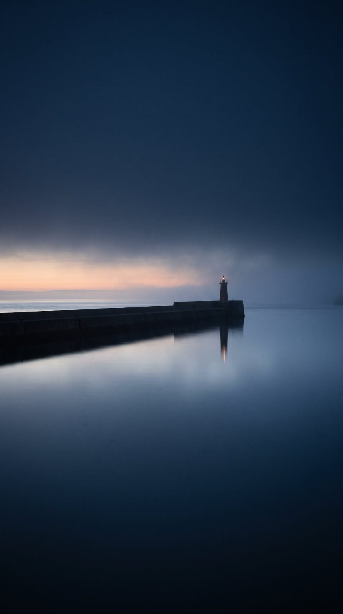

Holmscar Harbour
Tide times, visitor berths and notices to mariners for the working harbour on the River Rill.
Values on this site are fixed to Mon 5 October 2026, 10:40 BST. Practice site. Holmscar Harbour is fictional. Tides, berths, fees and notices are made up. Not for navigation.
Height of tide now
2.83 m
Rising. High water 14:13, 4.20 m.
- Over the sill
- 0.93 m
- Sill passable, 1.5 m draught
- 00:00–03:26, 12:26–15:52
- Today
- HW 01:40 · LW 07:17 · HW 14:13 · LW 19:50
- Range
- Neaps, building to springs on Mon 12 Oct
Wind today
- 06:00SW 412 kn, gusts 19
- 09:00SW 413 kn, gusts 21
- 12:00WSW 517 kn, gusts 24
- 15:00WSW 518 kn, gusts 26
- 18:00W 414 kn, gusts 22
- 21:00W 310 kn, gusts 17
Slight inside the bay, moderate outside Holm Scar. Visibility good, moderate in showers. 1008 hPa, falling slowly.
Visitor berths tonight
22 free of 37
- Pontoon8 of 14
- Marina5 of 10
- Quay wall3 of 5
- Mooring6 of 8
On the radio
- 16Coastguard
24 hours - 12Holmscar Harbour
07:00–21:00, duty phone outside these hours - 80Holmscar Marina
08:00–18:00
Out of hours: duty phone 07700 900 452.
Notices in force
All notices- 24/2026ADivers at the east breakwaterMon 5 to Fri 9 October, 08:00–16:00
- 23/2026West breakwater light unreliableFrom 28 September until further notice
- 20/2026Speed limit inside the breakwatersStanding notice
- 19/2026BFuel deliveries at the Fish QuayTuesdays, 07:00–09:00, until 31 March
Arriving
- Call aheadHolmscar Harbour on Ch 12 at the fairway buoy. Give boat name, length, draught and berth if booked.
- Leading lineEnter on 312° with the two white leading lights in line. Keep between the channel buoys.
- Speed4 knots inside the breakwaters, without wash.
- BerthVisitor pontoon: berth as told. Marina: wait on the visitor pontoon until the sill board shows enough water.
